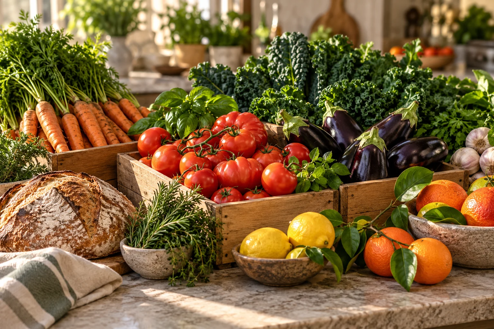

● AVAILABLE NOW
PREPARED MEALS · VEGETARIAN
Seasonal grain bowls
Maple & Rye Kitchen · West Loop
24 servingsprepared today · keep chilled
Predict surplus before it becomes waste. Connect available food with the people and organizations that need it.
A quiet signal in yesterday’s sales can become a meal on someone’s table tomorrow. We help kitchens see it coming.
Historical usage and changing demand help kitchens plan portions, prepare pickups, and get food moving earlier.
Maple & Rye Kitchen · West Loop

● PICKUP WINDOW OPENCedar Street Market · Fulton Market
Good redistribution depends on more than a match. The right food, right quantity, and a safe collection window all need to be clear.
Forecasts help teams plan; people make the final call on what is safe and ready to share.
Quantity, preparation time, collection details, and safe window travel with the food.
Nearby organizations and volunteers can confirm a pickup and keep donors informed.
Every kilogram, meal, and successful pickup begins with a food provider and a nearby partner saying yes.
Share what your kitchen can spare, or help make a nearby pickup possible.